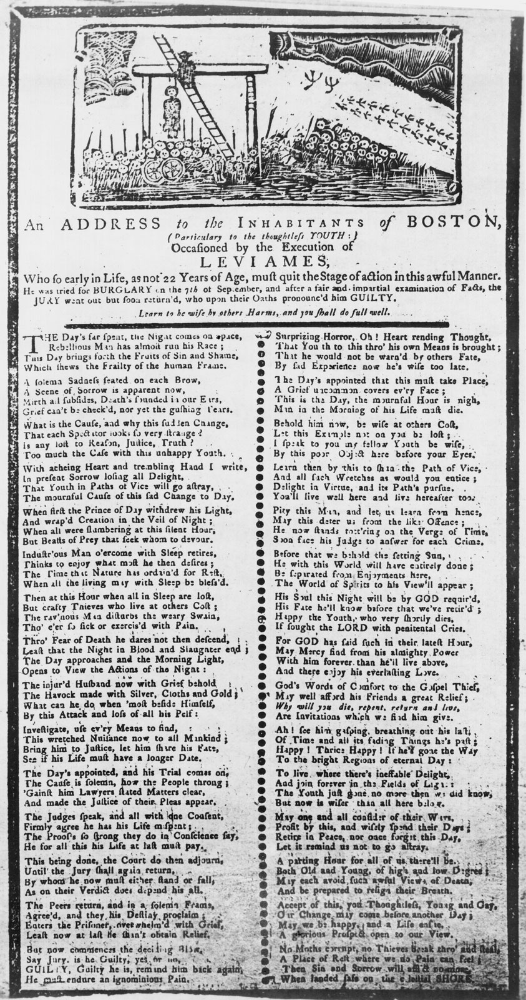

Of the origins of folk literature, as of the origins of human language, there is no way of knowing. None of the literature available today is primitive in any sense, and only the present-day results can be observed of practices extending over many thousands of years. Speculations therefore can only concern such human needs as may give rise to oral literature, not to its ultimate origin.